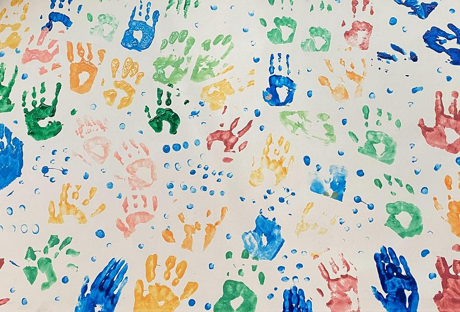
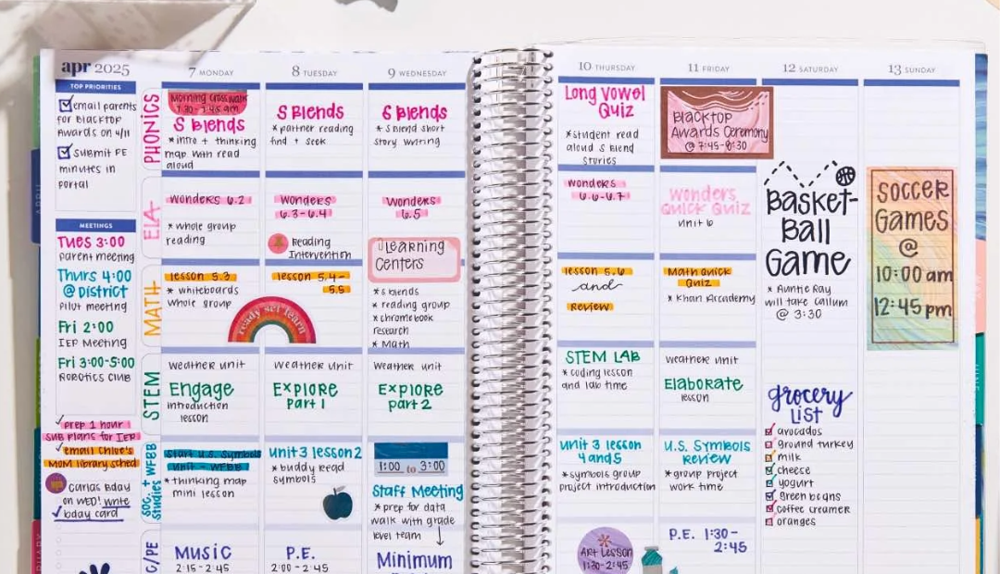
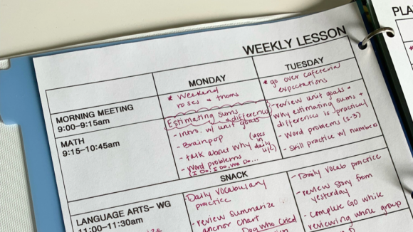

Handprint art is a classic craft for any age and it is absoulutely loved by first graders! It's also a fantastic way to create meaningful keepsakes for parents! Using washable paint to make the art is always better than not! Once the handprints are dry, the kids can turn their art into animals, flowers, or anything they wany! All you need is paper, stickers, markers, and paint! This project focuses on fine moter skills, artistic expression, and visual-spatial awareness!
As a first grade teacher, you juggle a wide variety of tasks every day—teaching, lesson planning, grading, communicating with parents, and managing a busy classroom full of energetic young learners. Staying organized is essential to reduce stress, save time, and create an environment that fosters learning and creativity. A well-organized teacher is not only more effective, but also more energized and focused.
As a first grade teacher, you know that creating engaging, effective lessons takes time—often more than we have in a typical school day. With endless tasks to juggle—from lesson planning and grading to managing classroom behavior—finding quality resources quickly and easily can make a huge difference. Enter Teachers Pay Teachers (TPT), the online marketplace where teachers can buy, sell, and share resources designed to make teaching easier and more fun.
As a first grade teacher, you wear many hats: educator, counselor, motivator, and organizer. The foundation of a successful school year starts with effective lesson planning. A well-thought-out lesson planner helps ensure that you’re prepared, confident, and able to meet the diverse needs of your young learners. It allows you to focus on teaching, not scrambling for materials, and ensures that every child gets the most out of their day in class.
As a first grade teacher, understanding your students’ individual needs is essential to their success. But with so many students and so many moving parts throughout the day, it can be difficult to remember every detail about each child. That's where taking notes on students comes in—whether it’s documenting academic progress, social-emotional growth, or behavior observations, keeping track of these details can help you tailor your teaching approach to each child’s needs.